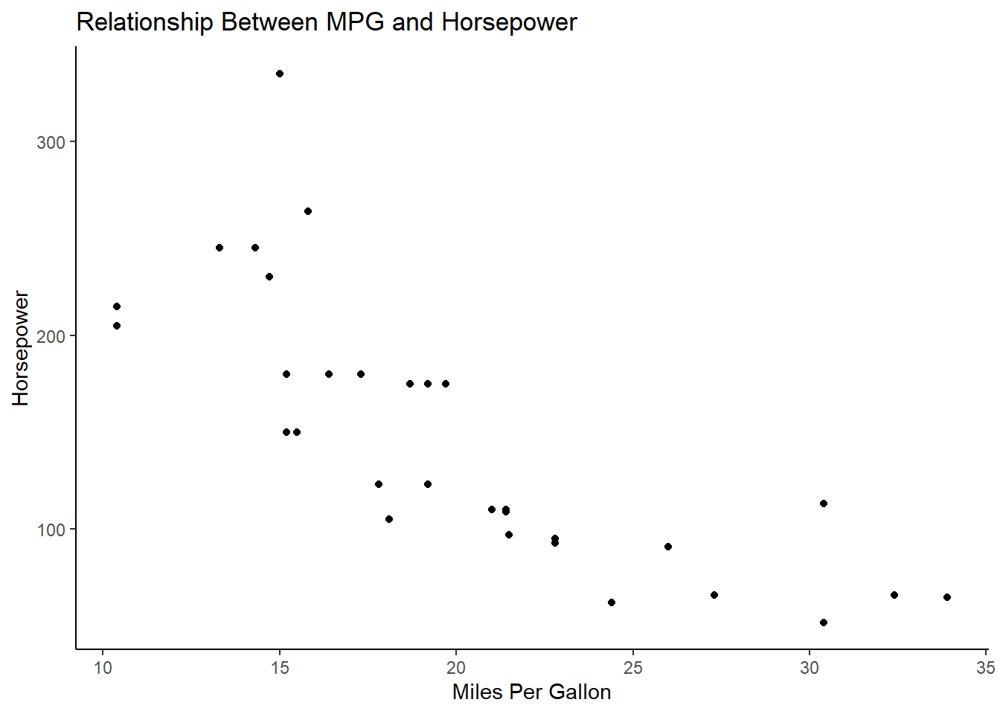

Chapter 10 Covariance and Correlation
In our statistical work, it is often of interest to us to assess the relationship between variables within our sample data. Let us say we have two numeric, normally distributed random variables \(X\) and \(Y\) which we have measured within our sample, it is often useful to understand how changes in the value of \(X\) are associated with changes in the value of \(Y\), and vice versa. Capturing the covariance of \(X\) and \(Y\) and the correlation of \(X\) and \(Y\) provide us two metrics by which we can measure the association between these two variables. In this text, we will discuss what covariance and correlation are, how they are calculated, what they can tell us, and how we can use R to invetigate them in our data.
10.1 Covariance
Covariance is a measure of how two random variables \(X\) and \(Y\) vary together. For now, we will discuss measuring covariance between two numeric variables \(X\) and \(Y\).
For example, let us say \(X\) is age and \(Y\) is height. We can understand that for adolescents (let’s say people aged 18 and younger), that as age (\(X\)) increases, so does height (\(Y\)). As age varies (i.e., as adolescents get older), their height varies in a corresponding pattern (i.e., older adolescents are taller than younger adolescents). Likewise, if we encounter a taller adolescent, it is fair to guess they are older than shorter adolescents. In this situation, we can understand that there is a positive covariance between age and height because increases in the value of one are associated with increases in the value of the other.
However, let us say we are looking at \(X\) is age and \(Y\) is height amongst people aged 18 through 65. Assuming people typically stop growing in height by age 18, we can see that among adults, no relationship exists between age (\(X\)) and height (\(Y\)). Knowing how old someone is provides no information about how tall they are and, likewise, knowing how tall someone is provides no information about how old they are. In such a situation, we can understand the covariance of \(X\) and \(Y\) is approximately 0!
Let’s consider one last example. Again, let \(X\) be age and \(Y\) be height. Let’s imagine we are now looking at individuals aged 65 and older, elders. It turns out as people get into their golden years, they tend to get a bit shorter. In this case, as elders’ age increases, we notice that height decreases. Within this sample, older people tend to be shorter and shorter people tend to be older. In this situation, we can understand that there is a negative covariance between age and height because increases in the value of one are associated with decreases in the value of the other.
10.1.1 Measuring Covariance
Mathematically, we refer to the covariance of \(X\) and \(Y\) with the expression: \(cov(X,Y)\). Let us assume that we have a sample of \(n\) individuals and we have measured \(X\) and \(Y\) among all \(n\) of these participants. If we let \(\bar{x}\) equal the mean of our \(n\) measures of \(X\) and if we let \(\bar{y}\) equal the mean of our \(n\) measures of \(y\), then we can define covariance between \(X\) and \(Y\), mathematically like so:
\[cov(X,Y) = \frac{\sum_{i=1}^n((x_i - \bar{x})*(y_i - \bar{y}))}{n-1}\]
What is this equation measuring, precisely? For each participant, \(i\), we are calculating \((x_i - \bar{x})*(y_i - \bar{y})\), where \(x_i\) is the value of \(X\) of participant \(i\) and \(y_i\) is the value of \(Y\) of participant \(i\). Well, \((x_i - \bar{x})\) contains two important pieces of information: 1) how far from the mean value of \(X\), \(\bar{x}\), the \(i^{th}\) participant is and 2) if the value of \(x_i\) is less than or greater than the mean value. We receive this same types of information for \((y_i - \bar{y})\).
10.1.1.1 Positive Covariance
Before we discussed how positive covariance captures when two variables increase together - i.e., when greater values of \(X\) are associated with greater values of \(Y\) (and vice versa). We refer to it as positive because, when this is the case, the value of \(cov(X,Y) > 0\). Why would that be so?
Let us consider our example of age (\(X\)) and height (\(Y\)) among youth aged 0 through 18, where we intuitively understand that \(cov(X,Y) > 0\). Let us say that the average age in our sample is \(\bar{x} = 9\) years old and the average height is \(\bar{y} = 52\) inches. Let us say that participant \(i\) is 5 years old and 40 inches tall. We can then calculate for this participant:
\[ \begin{align} &(x_i - \bar{x})*(y_i - \bar{y}) \\ = & (5 - 9)*(40 - 52) \\ = & (-4)*(-12) \\ = & 36 \end{align} \]
Notice here, when we multiply two negative values, we get a positive value. This makes sense, we want to calculate a positive value when lower values of \(X\) and are associated with lower value of \(Y\). We identify these values as negative, because they are both below their respective mean values.
Likewise, we want to calculate a positive value when higher values of \(X\) are associated with higher values of \(Y\). We sample someone else and they are 18 years old and they are 68 inches tall. For this participant we can then calculate:
\[ \begin{align} &(x_i - \bar{x})*(y_i - \bar{y}) \\ = & (18 - 9)*(68 - 52) \\ = & (9)*(16) \\ = & 144 \end{align} \]
Our equation for covariance is able to capture that people with above average age also tend to have above average height in our sample and that people with below average height also tend to have below average age.
Often, we primarily care if \(cov(X,Y)\) is less than 0 (negative covariance), equal or close to 0 (no covariance), or greater than 0 (positive covariance).
10.1.1.2 Negative Covariance
Likewise, it is good to see how our equation for measuring covariance captures negative covariance. We discussed that negative covariance is when higher values of \(X\) are associated with lower values of \(Y\) and, thus, when higher values of \(Y\) are associated with lower values of \(X\). We refer to it as negative, because in such cases \(cov(X,Y) < 0\).
Let us consider our example of age (\(X\)) and height (\(Y\)) among the elderly, where we intuitively understand that \(cov(X,Y) < 0\). Let us say that the average age in our sample is \(\bar{x} = 75\) years old and the average height is \(\bar{y} = 64\) inches. Let us say that participant \(i\) is 68 years old and 66 inches tall. We can then calculate for this participant:
\[ \begin{align} &(x_i - \bar{x})*(y_i - \bar{y}) \\ = & (68 - 75)*(68 - 64) \\ = & (-7)*(4) \\ = & -28 \end{align} \] In this instance, we get a negative value. This is because participant \(i\) had below average age compared to the sample and above average height. This results in multiplying together one negative value and one positive value.
Likewise, we could sample an older participant whose age is 92 and their height is 59 inches. We would then calculate:
\[ \begin{align} &(x_i - \bar{x})*(y_i - \bar{y}) \\ = & (92 - 75)*(59 - 64) \\ = & (18)*(-5) \\ = & -90 \end{align} \] Since this participant has above average age and below average height, the value calculated is negative.
Thus, if this pattern emerges across the full sample, this will result in \(cov(X,Y) < 0\). Of course, there are likely to be individuals who are both of above average age and height or both of below average age and height, resulting in a positive value. That is okay. Our measure of covariance is trying to capture a pattern in the relationship between \(X\) and \(Y\) - not every participant will fall perfectly into that pattern.
10.1.2 Covariance is a Measure of Association
In the examples provided, we can understand that there likely is a causal relationship between age and height. As children get older, they get taller. But we only know that this is causal because we have a specific understanding of how age influences height - we typically do not think of changes in height resulting in change in age. (Or, to be a bit of a philosophy troll - it is possible that our idea of age as a construct is cultural and it is totally possible, that, in another culture, height may be a more salient measure of the aging process then a measure of time…meaning that causality is extremely challenging to identify)
Importantly, covariance is a measure of the association of two variables \(X\) and \(Y\). Covariance does not identify why \(X\) and \(Y\) vary together, it simply identifies that they do and to what extent.
10.1.3 Measuring and Visualizing Covariance in R
Calculating the covariance between two variables \(X\) and \(Y\) in R is easy, we can just use the \(cov()\) function. We are going to use the mtcars data.frame that is included with R. It is a data.frame where each observation is a different car and we have a range of variables about each car, such as the miles per gallon it gets (mpg) and its horse power (hp). I would guess that cars with greater horsepower get fewer miles to the gallon - I imagine a powerful pickup truck gets worse gas milage than a small sedan. However, I’d like to confirm this in the data - my understanding is that there should be a negative covariance between a car’s miles per gallon and its horse power. I can calculate the covariance in R like so:
## Take the covariance
cov(mtcars$mpg, mtcars$hp)## [1] -320.7321As we see, we get a value of approximately -321, indicating a negative covariance between these two variables.
10.1.3.1 Visualizing Covariance with Scatterplots
-320.7321 is not easy to intuitively understand. Often, it is easier to understand covariance visually. To do so, we can use a scatterplot which plots values of our variable \(X\) against our variable \(Y\). Each participant’s observations \((x_i,y_i)\) are plotted on the graph.
Here, we will introduce the \(ggplot2\) package in R. This is a very powerful and useful package for generating visualizations in R. It can be a bit tricky, but we will learn how to use it through experience with it. Let us start by generating a basic scatter plot of miles per gallon (\(X\)) and horsepower (\(Y\)) by pairing the \(ggplot()\) function with the \(geom_point()\) function:
## First we need to load the ggplot2 package
library(ggplot2)
## Now we will create our visualization
## The first argument is our data.frame
## The second argument defines which variable is on the x-axis and which is on the y
## Finally, by writing "+ geom_point()" we are telling the computer to plot it as a scatterplot
ggplot(mtcars, aes(x = mpg, y = hp)) + geom_point() 
As we can see, higher horse power values tend to have lower miles per gallon (and thus points are concentrated in the top left of the plot). We see that cars with higher miles per gallon tend to have lower horse power. This visually displays negative covariance. However, our plot does not look that nice. So I am going to use some additional features of the \(ggplot2\) package to make the plot look nicer:
## We are going to use the labs function to set the name of the X-axis, Y-axis, and title
## We are going to change the appearance using the theme_minimal() function
ggplot(mtcars, aes(x = mpg, y = hp)) +
geom_point() +
labs(
x = "Miles Per Gallon",
y = "Horsepower",
title = "Relationship Between MPG and Horsepower"
) +
theme_minimal()You can customize many aspects of your scatterplot. One that I want to point out is that ggplot2 has a series of theme functions that can be used to change the appearance. I am a fan of \(theme_minimal()\) but there are many to explore, for example:
## theme_classic() is a classic!
ggplot(mtcars, aes(x = mpg, y = hp)) +
geom_point() +
labs(
x = "Miles Per Gallon",
y = "Horsepower",
title = "Relationship Between MPG and Horsepower"
) +
theme_classic()
## Or we can load themes from the ggthemes library
library(ggthemes)## Warning: package 'ggthemes' was built under R version 3.6.3## The solarized theme gives some fun flair!
ggplot(mtcars, aes(x = mpg, y = hp)) +
geom_point() +
labs(
x = "Miles Per Gallon",
y = "Horsepower",
title = "Relationship Between MPG and Horsepower"
) +
theme_solarized()The \(ggplot2\) package will come in handy whenever we want to create plots because it allows us to customize many of the features in our plot. In practice, you will learn how to use \(ggplot2\) by applying it in your work - there are many features and what you want to plot will shape which features you end up using.
The important takeaway here is that scatterplots represent a powerful tool for visually inspecting the relationship between two variables and identifying covariance. Let’s plot an example to visually see an example of positive correlation. Below I will plot the relationship between the weight of the vehicle (in tons) and its horsepower. A heavier car likely needs more horsepower to drive and heavier cars (such as trucks) are often desired to have greater horsepower for tasks like towing:
ggplot(mtcars, aes(x = wt, y = hp)) +
geom_point() +
labs(
x = "Weight (in tons)",
y = "Horsepower",
title = "Relationship Between Weight and Horsepower"
) +
theme_solarized()Here we can see that lighter cars tend to have lower horsepower (concentrated in the bottom left). Heavier cars tend to have higher horsepower. Positive correlation can visually be identified by a trend in points from the bottom left corner to the top right corner.
A scatterplot is also useful for indentifying no (or weak) covariance. In the following photo, there are three scatterplots, one displaying positive covariance, one displaying negative covariance, and the last displaying weak covariance:
With positive covariance we visually see a pattern where the data “travels” from the lower left to upper right. This pattern arises when greater values of \(X\) are associated with greater values of \(Y\). With negative covariance, we visually see a pattern where the data “travels” from the upper left to the lower right. This pattern arises when greater values of \(X\) are associated with smaller values of \(Y\). Finally, with weak covariance, we are unable to visually detect a pattern, indicating that \(X\) and \(Y\) behave independently of one another.
10.1.3.2 Covariance Matrix
Often though, we have a lot of variables in our dataset and we are interested in identifying pairings of variables that vary together. We can generate what is called a covariance matrix, a two-dimensional array where each row represents a variable and each column represents a variable. To do so, we simply use the \(cov()\) function and supply our data.frame as the argument. This tells the computer to take the covariance of every pairing of variables in our data.frame. I use the \(round()\) function to tell R to round all the values to one decimal, for the sake of visually looking at it!
round(cov(mtcars),1)## mpg cyl disp hp drat wt qsec vs am gear carb
## mpg 36.3 -9.2 -633.1 -320.7 2.2 -5.1 4.5 2.0 1.8 2.1 -5.4
## cyl -9.2 3.2 199.7 101.9 -0.7 1.4 -1.9 -0.7 -0.5 -0.6 1.5
## disp -633.1 199.7 15360.8 6721.2 -47.1 107.7 -96.1 -44.4 -36.6 -50.8 79.1
## hp -320.7 101.9 6721.2 4700.9 -16.5 44.2 -86.8 -25.0 -8.3 -6.4 83.0
## drat 2.2 -0.7 -47.1 -16.5 0.3 -0.4 0.1 0.1 0.2 0.3 -0.1
## wt -5.1 1.4 107.7 44.2 -0.4 1.0 -0.3 -0.3 -0.3 -0.4 0.7
## qsec 4.5 -1.9 -96.1 -86.8 0.1 -0.3 3.2 0.7 -0.2 -0.3 -1.9
## vs 2.0 -0.7 -44.4 -25.0 0.1 -0.3 0.7 0.3 0.0 0.1 -0.5
## am 1.8 -0.5 -36.6 -8.3 0.2 -0.3 -0.2 0.0 0.2 0.3 0.0
## gear 2.1 -0.6 -50.8 -6.4 0.3 -0.4 -0.3 0.1 0.3 0.5 0.3
## carb -5.4 1.5 79.1 83.0 -0.1 0.7 -1.9 -0.5 0.0 0.3 2.6As we can see, each row corresponds to a variable and each column corresponds to a variable. Each value represents the covariance of the two corresponding variables. You will notice that along the main diagnoal (starting from the top-left down to the bottom-right), that some entries display the covariance of a variable with itself. For example, the top-left entry the row is “mpg” and the column is “mpg.” We refer to this value as the variance \(\sigma^2\), which we have discussed in prior chapters.
10.2 Correlation
As we can see, though, the measurement of covariance is not easy to interpret and it is dependent on the scale of what we are measuring. For example, in the \(mtcars\) dataset we measured the covariance between miles per gallon and horsepower and found that \(cov(mpg, hp) \approx -321\). However, if we had measured fuel efficiency in miles per liter, our measure of covariance would change because (even though miles per liter represents the same value as miles per gallon) miles per liter is measured on a different scale (per liter) than miles per gallon.
Thus, it can be useful to have a standardized way to measure the association between two numeric variables. This is where we introduce the concept of correlation. Correlation is a standardized measure of covariance which measures the strength and direction of the association between two variables \(X\) and \(Y\). At the population-level, we denote correlation between \(X\) and \(Y\) with \(\rho_{X,Y}\) (the Greek letter “rho,” pronounded row) and it is equal to:
\[\rho_{X,Y} = \frac{cov(X,Y)}{\sigma_X * \sigma_Y}\] where \(\sigma_X\) is the standard deviation of \(X\) and \(\sigma_Y\) is the standard deviation of \(Y\). Interestingly, by dividing the covariance by the product of \(\sigma_X\) and \(\sigma_Y\), the correlation is always a value that falls between -1 and 1.
10.2.1 Computing the Correlation Coefficient for a Sample
Typically, we do not have the population estimates of covariance and standard deviation, so we need a formula by which we can calculate correlation from a sample. The most common form of correlation to take is called the Pearson correlation coefficient \(r_{X,Y}\) and we can calculate it like so:
\[r_{x,y} = \frac{\sum((x_i - \bar{x})*(y_i - \bar{y}))}{\sqrt{\sum(x_i - \bar{x})^2 * \sum(y_i - \bar{y})^2}}\] This is the equivalent of taking the \(cov(x,y)\) and dividing it by the product of measured standard deviations of \(X\) and \(Y\), \(s_X\) and \(s_Y\).
10.2.2 Computing the Coefficient in R
That is another intimidating equation. The important thing to know is that the correlation takes the covariance of \(X\) and \(Y\) and standardizes it by dividing it by the product of the standard deviation of \(X\) and \(Y\). This process of standardization comes up a lot, doesn’t it?!
It is quite simple though to compute the correlation between two variables in R by using the \(cor()\) function. Let’s now take the correlation of miles per gallon and horsepower in the mtcars package, like so:
cor(mtcars$mpg, mtcars$hp)## [1] -0.7761684This results in a standardized value of -0.776. Because correlation can only range from -1 to 1, we can see that this represents a relatively strong negative correlation between \(mpg\) and \(hp\)! However, it is good to now discuss how to interpret the correlation coefficient.
10.2.3 Interpreting the Correlation Coefficient
Whereas covariance can result in any value from \(-\infty\) to \(\infty\), correlation can result in a value from -1 to 1. If \(r_{X,Y} = 1\), this indicates a perfect positive linear relationship between \(X\) and \(Y\). What is a perfect linear relationship? Well, remember in middle school we learned that a line can be defined using the equation \(y = mx + b\), where \(m\) is the slope of the line and \(b\) is where the line crosses the \(y\)-intercept?
When \(r_{X,Y} = 1\), this means that when we plot our scatterplot of \(X\) and \(Y\), that the points will fall perfectly on a line and that the slope of the line is positive (meaning that greater values of \(X\) are associated with greater values of \(Y\)). Let us plot some points to display this. I will generate two vectors that have a perfect linear correlation, like so:
X = c(1,2,3,4,5)
Y = c(2,4,6,8,10)
data <- data.frame(X,Y)
ggplot(data, aes(x = X, y = Y)) +
geom_point() +
labs(
x = "X",
y = "Y",
title = "Relationship Between X and Y - rho = 1"
) +
theme_solarized()Let’s just run our \(cor\) function to confirm that \(r_{X,Y}\) in fact is equal to 1.
cor(data$X, data$Y)## [1] 1Likewise, when \(\rho = -1\), this means that there is a perfect negative linear relationship between \(X\) and \(Y\). In such a situation, we can understand that there is a line \(y = mx + b\) that perfectly explains the relationship between \(X\) and \(Y\) and that the slope \(m\) is negative. We can depict such an example like so:
X = c(5,4,3,2,1)
Y = c(2,4,6,8,10)
data <- data.frame(X,Y)
ggplot(data, aes(x = X, y = Y)) +
geom_point() +
labs(
x = "X",
y = "Y",
title = "Relationship Between X and Y - rho = -1"
) +
theme_solarized()## Let's print out the calculated correlation to confirm!
cor(data$X, data$Y)## [1] -1In practice, we are likely to never observe a perfect correlation between two variables. In fact, if you ever do, it is worth asking if you made a mistake, because perfect correlations typically do not occur in social science research!
10.2.3.1 Positive Correlation (\(0 < r < 1\))
But, this means that it is important that we know how to interpret other values of \(r_{X,Y}\). When \(r_{X,Y}\) is between 0 and 1, this means that greater values of \(X\) are associated with greater values of \(Y\), but that they do not fall perfectly onto a given line. We can use a simple linear regression (using \(geom_smooth()\)) to visualize this. It is important to note, however, that this is simply a visual aid and that linear regression is a distinct approach from calculating correaltion.
ggplot(mtcars, aes(x = wt, y = hp)) +
geom_point() +
labs(
x = "Weight (in tons)",
y = "Horsepower",
title = "Relationship Between Weight and Horsepower"
) +
geom_smooth(method='lm', se = F)+
theme_solarized()## `geom_smooth()` using formula 'y ~ x'As we can see, the relationship between weight and horsepower appears to be well-explained by the plotted line (in blue). We can see that the slope is positive because the line goes from the lower left to the upper right. However, we can also see that the points do not perfectly match up with the line, so our correlation is going to be between 0 and 1. Let’s check with the \(cor()\) function:
cor(mtcars$wt, mtcars$hp)## [1] 0.6587479Here we have calculated a value of about 0.66, indicating a strong positive correlation between weight and horsepower. We can intuitively understand that if points fell closer to the line, the value of \(r\) would be closer to 1 and if points fell further from the line, the value of \(r\) would be closer to 0.
You can find many “rules” for interpreting correlation coefficients. Something like:
- <0.3 indicates no correlation
- .3-.5 indicates low correlation
- .5-.7 indicates moderate correlation
- .7-1 indicates high correlation
However, these are guidelines, not hard and fast rules. It can be good to keep them in mind, especially when a method (such as multiple regression) requires that variables be independent of one another. However, interpretation can be challenging and is dependent on the research context. When given methods rely on assessing correlation, we will discuss how correlation is to be interpreted.
Importantly, the correlation coefficient does not measure the magnitude of the relationship between \(X\) and \(Y\), but instead measures the existence of a linear dependency between the two variables.
This is a good place to note that Pearson’s Correlation Coefficient requires several assumptions be met for it to perform well:
- The relationship between \(X\) and \(Y\) is linear in nature
- There are no severe outliers in the data
- \(X\) and \(Y\) are normally distributed variables
10.2.4 What if the Correlation Between Two Variables Is Not Linear in Nature
The Pearson correlation coefficient measures if there exists a linear dependency between two variables \(X\) and \(Y\). By linear dependency, we just mean that there exists a line (\(y = mx + b\)) that explains how \(X\) and \(Y\) vary together. But, it is totally possible that \(X\) and \(Y\) vary based on a non-linear function.
A non-linear function is a line that is not straight, but that describes a formulaic (mathematical) relationship between \(X\) and \(Y\). For example, you could data that follows a quadratic function \(y = x^2\), which looks like:
X = c(0,1,2,3,4,5,6,7)
Y = X^2
data <- data.frame(X,Y)
ggplot(data, aes(x = X, y = Y)) +
geom_point() +
labs(
x = "X",
y = "Y",
title = "Relationship Between X and Y - y = x^2"
) +
theme_solarized()Or perhaps a logarithmic function, like so:
X = c(1,2,3,4,5,6,7)
Y = log(X)
data <- data.frame(X,Y)
ggplot(data, aes(x = X, y = Y)) +
geom_point() +
labs(
x = "X",
y = "Y",
title = "Relationship Between X and Y - y = ln(x)"
) +
theme_solarized()In these example cases, \(X\) and \(Y\) vary perfectly according to non-linear functions, but, if we check their correlation score, we do not get 1. Let us look at both examples:
## Let's define a vector X from 0 to 10
X = c(0,1,2,3,4,5,6,7,8,9,10)
## And define y = x^2
Y = X^2
## Check the correlation
cor(X,Y)## [1] 0.9631427## Let's define a vector X from 0 to 10
X = c(1,2,3,4,5,6,7,8,9,10)
## and define y = ln(x)
Y = log(X)
cor(X,Y)## [1] 0.9516624Because our values of \(X\) and \(Y\) (in each case) are perfectly described by a non-linear function, we would want to articulate that this is a perfect correlation (with a score of 1). \(X\) and \(Y\) vary together in perfect unison, defined by a non-linear function - however, Pearson’s correlation coefficient assesses how well some linear function fits to the data. In this case, we still got very high correlation scores, but our data is never going to perfectly match some function (linear or not).
The important takeaway here is that Pearson’s correlation coefficient is not ideal for calculating correlation when the relationship between \(X\) and \(Y\) is best described by a non-linear function. There are two common correlation calculations that can be used when it appears that there exists a non-linear relationship between \(X\) and \(Y\).
10.2.4.1 Spearman’s Rank Correlation Coefficient
Spearman’s Rank Correlation Coefficient \(r_s\) is a commonly constructed alternative to Pearson’s Correlation Coefficient. Instead of comparing the values of \(X\) and \(Y\) to one another, we instead compare the ranks of each variable \(R(X)\) and \(R(Y)\). We are checking if changes in the rank of \(X\) vary with changes in the rank of \(Y\). In simpler terms, a positive rank correlation would indicate that higher values of \(X\) correspond with higher values of \(Y\) and a negative rank correlation would indicate the higher values of \(X\) correspond with lower values of \(Y\). It does not matter if the relationship is linear or non-linear - we are just assessing if the rank-ordering of \(X\) is associated with the rank-ordering of \(Y\).
To calculate \(R(X)\), each value in \(X\) is assigned a value based on its ranking from smallest to largest. The smallest value is assigned 1, the 2nd smallest value is assigned 2 and so on. For example, if we had the following vector of numbers \(X\):
\[X = \{4,12,0,-2,-5\}\]
Then \(R(X)\) would be equal to:
\[R(X) = \{4,5,3,2,1\}\]
As we can see, -5 is the smallest value in \(X\) so we assign its value in \(R(X)\) to be 1. 12 is the largest value in \(X\), so it ends up with the largest rank of 5.
If there are multiple datapoints with the same value, then the average rank is taken. For example, lets look at the following vector:
\[X = \{1,2,2,3,4\}\]
Technically, the 2nd and 3rd entries are equal to one another. They are tied for the second lowest number, which corresponds to a ranking of 2. However, since there are two values, we want these two values to represent rank 2 and rank 3. To do so, we take the average, and assign them both a rank of 2.5. Then the next lowest value will be assigned a rank of 4, like so:
\[R(X) = \{1,2.5,2.5,4,5\}\]
All we will do now is apply Pearson’s Correlation on the rank variables. So, if we used the following equation to the Pearson coefficient of \(X\) and \(Y\):
\[r_{x,y} = \frac{\sum((x_i - \bar{x})*(y_i - \bar{y}))}{\sqrt{\sum(x_i - \bar{x})^2 * \sum(y_i - \bar{y})^2}}\]
Then we simply use the following to assess the Spearman’s correlation:
\[r_{R(x),R(y)} = \frac{\sum((R(x)_i - \bar{R(x)})*(R(y)_i - \bar{R(y)}))}{\sqrt{\sum(R(x)_i - \bar{R((x)})^2 * \sum(R(y)_i - \bar{R(y)})^2}}\]
Now, a perfect Spearman correlation of 1 indicates that the rank-ordering of \(X\) and \(Y\) are identical (i.e., the smallest value of \(X\) and \(Y\) are from the same observation, the second smallest value of \(X\) and \(Y\) are from the same observation, etc). If the Spearman correlation is -1, this indicates that the rank-ordering of \(X\) and \(Y\) are perfect opposites (i.e., the smallest value of \(X\) corresponds with the largest value of \(Y\), the second smallest value of \(X\) corresponds with the second largest value of \(Y\), etc).
We can easily calculate the Spearman coefficient in R using the same \(cor()\) function. Here, we will run the Spearman correlation for data points following \(y = x^2\). This should result in \(r_s = 1\).
## Let's define a vector X from 0 to 10
X = c(0,1,2,3,4,5,6,7,8,9,10)
## And define y = x^2
Y = X^2
## Check the correlation, using SPearman
cor(X,Y, method = "spearman")## [1] 1All we had to do was specify the argument \(method = "spearman"\) and R knew what to do. The \(cor()\) function defaults to the Pearson method, so it does not need to be specified.
10.2.4.2 Kendall’s Rank Coefficient
Kendall’s Rank Coefficient takes a different approach to determining correlation. Let us say we have \(n\) observations of \(X\) and \(Y\). We can define measurements from the \(i^{th}\) observation with the pair \((x_i,y_i)\).
Now, we are going to count how many concordant and discordant pairs there are in the data. Let’s take two pairs \((x_i,y_i)\) and \((x_j,y_j)\). If 1) \(x_i > x_j \space\&\space y_i > y_j\) or 2) \(x_i < x_j\space \& \space y_i < y_j\), then we consider the pair concordant. In this case, one pair has a greater \(x\) and \(y\) value than the other pair. A discordant pair this therefore any pair in which one has a greater \(x\) value and the other has the greater \(y\) value.
Let’s let \(C\) be the number of concordant pairs and \(D\) be the number of discordant pairs. Let’s create two additional variables as well: 1) Let \(X_0\) be the number of pairs where the \(x\) values are equal (but \(y\) values are not); 2) Let \(Y_0\) be the number of pairs where the \(y\) value is equal (but the \(x\) value is not).
We represent this version of Kendall’s rank coefficient with \(\tau_b\) (the greek letter “tau,” pronounced the way you would say “Owwww!” when you stub your toe). The formula is as follows:
\[\tau_b = \frac{C - D}{\sqrt{(C + D + X_0)*(C + D + Y_0)}}\] Logically, we can see that the numerator is capturing the ratio of concordance to discordance. If every pairing is concordant, then all the observations are in perfect positive rank order. If every pairing is discordant, then all the observations are in perfect negative rank order. If we have the same amount of concordant and discordant observations, \(C-D = 0\), this indicates the data is pretty “jumbled together” and a pattern is not apparent.
The equation is dividing by the total number of pairings, with an adjustment to account for ties.
We can easily run this correlation in R using the \(cor()\) function like so:
## Let's define a vector X from 0 to 10
X = c(0,1,2,3,4,5,6,7,8,9,10)
## And define y = x^2
Y = X^2
## Check the correlation, using SPearman
cor(X,Y, method = "kendall")## [1] 110.2.5 Correlation Matrix
The last thing we will discuss in this text is the correlation matrix. Like the covariance matrix, we can generate a table that shows correlation between all the variables in our dataset. This can be incredibly useful when we are examining our data and trying to identify if we have any variables that are highly correlated.
This is very important when we get into fitting regression models where variables need to be independent. We typically do not want to include two variables as predictors in a model if they have high correlation scores - as this indicates the sampled values are not independent. The \(cor()\) function can be used by simply supplying it with a data.frame, like so:
## This will take the Pearson correlation
cor(mtcars[,c(1:5)])## mpg cyl disp hp drat
## mpg 1.0000000 -0.8521620 -0.8475514 -0.7761684 0.6811719
## cyl -0.8521620 1.0000000 0.9020329 0.8324475 -0.6999381
## disp -0.8475514 0.9020329 1.0000000 0.7909486 -0.7102139
## hp -0.7761684 0.8324475 0.7909486 1.0000000 -0.4487591
## drat 0.6811719 -0.6999381 -0.7102139 -0.4487591 1.0000000## Can also specify alt-correlations
cor(mtcars[,c(1:5)], method = c("kendall"))## mpg cyl disp hp drat
## mpg 1.0000000 -0.7953134 -0.7681311 -0.7428125 0.4645488
## cyl -0.7953134 1.0000000 0.8144263 0.7851865 -0.5513178
## disp -0.7681311 0.8144263 1.0000000 0.6659987 -0.4989828
## hp -0.7428125 0.7851865 0.6659987 1.0000000 -0.3826269
## drat 0.4645488 -0.5513178 -0.4989828 -0.3826269 1.0000000As you’ll notice, the main diagonal of the matrix (top left to bottom right) all equal 1. This is because a variable is inherently perfectly correlated with itself. You can also see that the matrix is symmetric, as the same comparisons are made twice (one below the main diagonal and once above).
However, this is not fun to read! I want something that will visually help me detect which variables are highly correlated with one another! We are going to use the \(corrplot\) library to generate a Correlogram, like so:
## load the library
library(corrplot)## corrplot 0.90 loaded## save our correlation matrix
cormat <- cor(mtcars[,c(1:10)], method = c("kendall"))
## run the corrplot function on our matrix
corrplot(cormat)Visually, this is much easier navigate. We can see that big blue circles represent positive correlation (approaching 1) and big red circles represent negative correlation (approaching -1). When circles are fainter, it means there is less correlation between the two variables (with no circle indicating no correlation). We can visually see many patterns in our data. For example: we can see that miles per gallon is negatively correlated with the number of cylinders the vehicle has; we can see that the number of cylinders is positively correlated with the amount of horsepower the vehicle has.
This plot can be an incredibly useful tool for identifying correlation in your data. While in this example, I have run the function on some categorical data (i.e., cylinders), generally we run correlation on continuous data. Assessing correlation is important in and of itself, but will also be important when implementing other methods going forward!